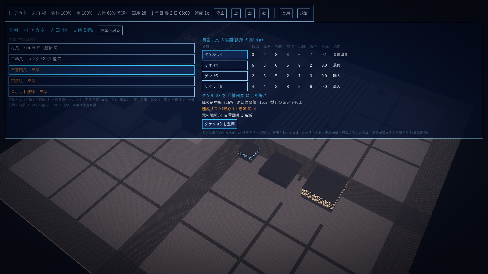
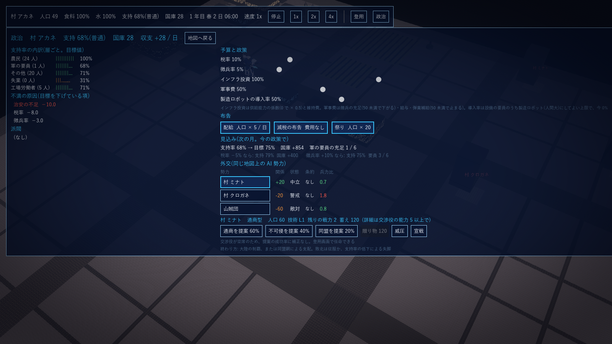

G19 手順4.5 登用と政治: 設計案と決定事項
2026-10-15 作成、同日回答で確定(#6 に反乱を追加、#9 を製造ロボットの導入率に差し替え、#14 の含めない項目は後で足せる前提で構造を作る)。G3 第 3 節「手順 5 の前に『登用と政治』を手順 4.5 として置く」に従う。正典(G1 の「プレイヤーは神・王の視点。誰を登用してどこに置くかを決め、運営は登用した人物が行う」、G3 第 2 節の人物と役職の解放、G4 の政治の列、G6 登用画面、G7 政治画面の左半分、G12 #7-6 治安と派閥、G17 の人物・支持率・帯)に沿う設計案。外交(G7 の右半分)は手順 5 後半。
1. 位置づけ
都市(G17)が作った人物と支持率を、プレイヤーの唯一の操作「登用と解任」と「政策」に結びつける。役職に置いた人物の能力が都市・工場・軍の係数になり、置き方と政策が層ごとの支持率と派閥に返ってくる。これで G3 構想図の「政治 → 各系統」の矢印が全てつながり、残るのは外交だけになる。
2. 着手前の決定事項(2026-10-15 確定)
| # | 項目 | 決定 | 根拠・備考 |
|---|---|---|---|
| 1 | 役職と解放 | 段階ごとに役職が増える。村: 村長(統治)・工場長(生産)・自警団長(指揮)・交渉役(交渉)・ロボット技師(生産。第 0 世代の試作後)。町: 村長 → 町長、隊長(指揮。隊 3 つごとに 1 人)、区長(統治。住居 10 棟ごとに 1 人)。都市: 市長、将軍(指揮)、外交官(交渉)。国家: 閣僚 4(内務 = 統治、産業 = 生産、軍務 = 指揮、外務 = 交渉)、元帥。役職ごとに適性の能力が 1 つ決まる | G6 のモックの役職、G4 政治の列 |
| 2 | 役職の効果 | 効果は役職の適性能力 a(1〜10)から (a − 5) × 係数 で決まり、空席は a = 0 扱い(減点)。首長(村長〜市長・内務): 支持率の目標 ±、税収の係数。工場長・産業: 全工場の失敗率の倍率と加工速度(担当者の効きと同じ式で建物全体に掛かる)。自警団長〜将軍・軍務: 隊の命中率と退却の閾値、徴兵の充足係数。交渉役・外交官・外務: 交易の価格と外交の成功率(外交は手順 5)。ロボット技師: 機体組立の高品質率の倍率。区長・隊長は担当する住居・隊だけに効く。係数は json | G6「登用した場合の見込み」、G12 #13「担当者は失敗率だけ」と整合させ、工場長は建物全体に薄く掛ける |
| 3 | 登用と解任 | プレイヤーの操作は登用と解任だけ。候補は都市の人物(G17 #12)で、人物は元の職(農民 / 工場労働者 / 自警団員 / 職人 / 商人)を持つ。登用で元の職の人数が 1 減る(G6「元の職の穴」)。解任した人物は忠誠 −3・不満 +3 で候補に戻る。役職の掛け持ちは不可。兼任の自動昇格(村長 → 町長)は段階の昇格時に自動 | G1「登用と解任だけを行う」 |
| 4 | 忠誠・野心・不満 | 人物は 忠誠(1〜10)・野心(1〜10)・不満(0〜10)を持つ。不満は 1 日ごとに 支持率の帯(低い +0.1、危険 +0.3)、解任(+3)、役職なしで野心 7 以上(+0.1 / 日)で溜まり、役職に就いていて帯が普通以上なら −0.1 / 日。忠誠は 30 日ごとに帯で ±(G17 #15〜#18)、不満 8 以上で −1 / 月 | G3「忠誠が低く野心の高い人物は不満が溜まると派閥を作る」 |
| 5 | 派閥の発生 | 忠誠 3 以下 かつ 野心 7 以上 かつ 不満 6 以上 の人物が派閥を作る(1 人 1 派閥、同時に最大 3)。派閥は 要求 1 つ(ロボット導入の制限 / 減税 / 徴兵の緩和 / 食料と水 / 治安 のうち、その時点で最も悪い指標から選ぶ)と 支持者数(その層の人数 × 不満の割合)を持つ。派閥がある間、支持率の目標 −(支持者数 / 人口 × 20)、治安の需要 +支持者数 | G7 の派閥の表示、G12 #7-6 |
| 6 | 派閥の解消と離反 | 要求を満たす(指標が閾値を超えて 7 日)か、治安の充足 1 が 30 日続くと縮小して消える。放置して 60 日経つと離反: 首領と支持者の 3 割が都市を去り(流出)、AI 国家側に「亡命者」として記録(外交の種。手順 5)。反乱: 支持率が失脚の帯(10 未満)にあり、派閥の支持者が人口の 3 割を超えると武力の反乱になる(2026-10-15 回答「余程下がった場合は反乱があってもいい」)。反乱中は 生産効率 50%・税収 0・流出 5% / 日・治安の需要 3 倍で、治安の充足 1 が 15 日続くか要求を満たすと鎮圧される。人間の戦闘は無いので隊の出動は無く、治安(警察)で解決する | G3 の終わり方(失脚)と G17 #19 の失脚に至る道筋 |
| 7 | 層ごとの支持率 | G7 の表示どおり 農民 / 工場労働者 / 軍の要員 / 失業 / その他 の 5 層。層の人数は G17 の雇用の集計から(用途の要員 = 農民など、設備の要員 = 工場労働者、徴兵 = 軍、失業)。層ごとに目標値の重みを変える(失業層: 失業 ×2、工場労働者: ロボット代替率 −、軍: 徴兵率 ×2、農民: 食料と水 ×2)。全体の支持率 = 層の人数加重平均で、G17 の式はこれに置き換わる(基準・税率・治安・公園・廃棄物・公害は全層共通) | G7「支持率の内訳(層ごと)」「不満の原因」 |
| 8 | 予算と政策 | 税率・徴兵率(G17 で実装済み)に加えて、インフラ投資(0〜100。維持費の係数で、100 で充足率そのまま、50 で供給能力 × 0.75、0 で × 0.5)と 軍事費(0〜100。隊の要員の給与と弾薬補給の係数。50 未満で出撃後の弾薬補給が遅れ、0 で徴兵の充足 × 0.5)。いずれも国庫からの支出 | G7「予算と政策」 |
| 9 | 製造ロボットの導入率 | 製造ロボット(人間大。factory_robot)と戦闘機体は別の概念(2026-10-15 回答)。政策「製造ロボットの導入率」= 設備の要員のうちロボットに置き換えてよい上限(0〜100%、既定 50%)。上限を超える AssignRobot は拒否される。置き換えた人数は工場労働者層の失業として支持率に効く(G3 の軸)。戦闘機体は全て兵役(隊)で、工場では働かない | G1 の柱と確定要件を同日に明確化 |
| 10 | 即効の布告 | 3 種: 配給(30 日、食料と水の充足を 1 扱い、国庫から 人口 × 5 / 日)、減税の布告(30 日、税率 0、支持率の目標 +5)、祭り(即時 支持率 +5、国庫から 人口 × 20)。同じ布告は効果中は重ねられない。G17 #20 で手順 4.5 に回したもの | G17 #20 |
| 11 | 人物の入れ替わり | 候補は登用されないまま 12 か月で去る(候補一覧の肥大化を防ぐ)。役職に就いた人物は去らない。死亡と年齢は入れない(G6 の「死亡」は将来) | G6「登用・解任・昇進・死亡で入れ替わる」のうち死亡は見送り |
| 12 | 見込みの表示 | 登用画面: 候補を選ぶと「登用した場合の見込み」(効果の係数の差、離反リスク = 野心と忠誠から、元の職の穴)。政治画面: 政策を変えた場合の「次の月の見込み」(支持率・国庫・徴兵の充足)を、同じ式を 1 か月分回して出す(乱数なし) | G6・G7 のモック |
| 13 | 時間の刻み | 役職の効果は 1 時間ごとに係数を更新(G17 の Hour に乗せる)。不満・派閥・布告の残り日数は 1 日ごと。見込みは画面を開いたときに計算 | G3「都市と政治はゲーム内 1 時間ごと」 |
| 14 | 第 1 段階の範囲 | 計算(GPS.Sim): 役職と効果、登用と解任、人物の職と不満、派閥の発生・要求・解消・離反、層ごとの支持率、インフラ投資と軍事費、製造ロボットの導入率、布告 3 種、見込みの計算、反乱(#6)。命令: Appoint / Dismiss / SetBudget / SetRobotCap / Decree。検証は xunit と、Godot の登用画面(G6)と政治画面(G7 の左半分)。都市の画面の上の帯から遷移する。含めない: 外交(G7 右半分、手順 5 後半)、人物の死亡、選挙。含めない項目は後で足せる前提で構造を作る(亡命者の記録、人物の年齢の欄、役職の任期) |
3. 第 1 段階の実装記録(2026-10-15 完了)
#1〜#14 を sim/GPS.Sim/Politics.cs に実装し、xunit 58 件(既存 50 + 政治 8)が全て通る。数値は game/data/politics.json で調整する。含めない項目は足場だけ入れてある(亡命者の記録 Exiles、人物の年齢 Age、役職の枠 Id)。
| 区分 | 内容 | ファイル |
|---|---|---|
| 役職の枠 | 段階と建物・隊の数から枠を作る(村: 村長・工場長・自警団長・交渉役、技師は機体の試作後か町から。町: 区長(住居 10 棟ごと)・隊長(隊 3 つごと)。都市: 市長・将軍・外交官。国家: 閣僚 4・元帥)。枠が消えると役職は自動で外れる | PoliticsSim.Slots、politics.json(offices) |
| 効果(1 時間ごと) | (能力 − 5) × 係数、空席は能力 0。首長 → 支持率の目標 ±2/点・税収 ±3%/点。工場長 → 全工場の失敗率 ∓3%/点・加工速度 ±2%/点。軍の長 → 命中率 ±2%/点・既定の退却閾値 ∓2%/点・徴兵の充足 ±5%/点。交渉役 → 交易の売値 ±2%/点。技師 → 機体部品の高品質率 ×(1 + 0.1 × (能力 − 5))。元帥 → 命中率 +1%/点。区長・隊長は埋まった枠 +、空席 −。係数は Factory の FailureMulPct / SpeedMulPct / HitMulPct / RetreatHp / PriceMulPct / HighQualityMulPct に入り、工場(StepMachine)・戦闘(Combat)・交易(StepTrade)がそれを読む | PoliticsSim.Hour、Factory.cs、Combat.cs |
| 登用と解任 | Appoint(枠, 人物)・Dismiss(枠)。掛け持ち不可、解任で忠誠 −3・不満 +3。登用で元の職の穴(JobHoles)を数える。首領を登用するとその派閥は消える | Politics.cs(命令) |
| 人物の職・不満・入れ替わり | 人物は職(農民 / 工場労働者 / 自警団員 / 職人 / 商人)・不満(0〜10)・年齢を持つ。不満は帯(低い +0.1、危険 +0.3 / 日)、解任、役職なしで野心 7 以上(+0.1 / 日)で溜まり、役職に就いていて帯が普通以上なら −0.1 / 日。不満 8 以上で毎月忠誠 −1。役職に就かない候補は 360 日で去る | PoliticsSim.Day、Month |
| 派閥 | 忠誠 3 以下・野心 7 以上・不満 6 以上の人物が作る(最大 3)。要求はその時点で最も悪い指標(ロボット導入 / 税率 / 徴兵率 / 食料と水 / 治安)、支持者は職の層の人数 × 0.5(人口の半分を超えない)。効果: 支持率の目標 −(支持者 / 人口 × 20)、治安の需要 +支持者。要求を満たして 7 日か、治安の充足 1 が 30 日で解消(首領の不満 −6・忠誠 +1)。放置 60 日で離反: 首領が消え、支持者の 3 割が流出し、亡命者に記録 | PoliticsSim.Day、DemandMet |
| 反乱(#6 追加) | 失脚の帯で派閥の支持者が人口の 3 割を超えると反乱。反乱中は 生産効率 50%・税収 0・流出 5% / 日・治安の需要 3 倍(帯の 2 倍とは重ねない)。治安の充足 1 が 15 日続くか派閥が無くなると鎮圧(支持者は半減、30 日は再発しない)。警察の能力は暴動・反乱で落ちない | PoliticsSim.Day、City.cs(Hour) |
| 層ごとの支持率 | 農民(用途の要員)/ 工場労働者(設備の要員)/ 軍の要員(徴兵)/ 失業 / その他(非労働)の 5 層。共通項(基準・失業・税率・徴兵率・治安・公園・廃棄物・公害・国庫・首長の効果・派閥・布告)に層の項(農民は食料と水 × 2、工場労働者は −20 × ロボット割合、軍は −60 × 徴兵率、失業は −40)を足し、人数で加重平均する。G17 の式はこれに置き換わった | PoliticsSim.StrataTarget、CitySim.CommonTarget |
| 予算 | インフラ投資 0〜100: 供給能力 × (0.5 + 0.5 × 投資 / 100)、維持費 × 投資 / 100。軍事費 0〜100: 徴兵の充足 × (50 以上で 1、0 で 0.5)、給与 × 軍事費 / 50、50 未満で格納庫の弾薬補給が止まる | SetBudget、City.cs(Hour、Day)、Combat.cs |
| 製造ロボットの導入率(#9) | 設備の要員のうち製造ロボットの割合が上限を超える AssignRobot は拒否(robot_cap の通知)。割合は工場労働者層の減点に効く | SetRobotCap、Commands.cs(AssignRobot) |
| 布告 | 配給(30 日、食料と水の充足を 1 扱い、人口 × 5 / 日)、減税の布告(30 日、税率 0、目標 +5)、祭り(即時 +5、人口 × 20、30 日は重ねられない) | Decree、politics.json(decrees) |
| 見込み | 与えた税率・徴兵率・インフラ投資・軍事費で、支持率の目標・国庫の 30 日分の増減・徴兵の充足を乱数なしで出す | PoliticsSim.Forecast |
4. 登用画面と政治画面(Godot)
都市の画面(G17)の上の帯の「登用」「政治」で重ねて開き、「地図へ戻る」で閉じる。起動時に開くには ++ --screen recruit|politics [--office kind] [--pick personId]。登用画面(G6): 左に役職の枠と現職(空席は橙)、右に選んだ役職の候補(適性能力の高い順。統治・生産・指揮・交渉・忠誠・野心・不満・現在の職)、候補を選ぶと「登用した場合の見込み」(効果の差・離反リスク・元の職の穴)と「登用」「解任」。政治画面(G7 の左半分): 層ごとの支持率の目標、不満の原因(目標を下げている項の上位)、派閥(要求・支持者・日数・解消の進み)、亡命者、予算と政策(税率・徴兵率・インフラ投資・軍事費・製造ロボットの導入率のスライダ)、布告 3 種、次の月の見込み(今の政策、税率 −5% の場合、徴兵率 +10% の場合)。

登用画面: 村 アカネ。村長 ハルカ、工場長 コウタ、自警団長と交渉役とロボット技師は空席。自警団長の候補で タケル(指揮 8・野心 7)を選んだ状態。

政治画面: 不満の原因は治安の不足(警察の要員が畑に取られて埋まっていない)。見込みは支持率 68% → 75%、国庫 +854 / 月、軍の要員 1 / 6。
5. 残る粗(第 1 段階の外)
| 項目 | 状態 |
|---|---|
| 外交(G7 の右半分) | 手順 5 後半。亡命者と支持率の帯を外交に渡す(G17 #19) |
| 人物の死亡・年齢・選挙 | 年齢の欄だけ。死亡と選挙は入れていない |
| 区長・隊長の担当の割り当て | 枠の数だけ作り、効果は全体に薄く掛ける。担当の住居・隊を選ぶ操作は無い |
| 人物の描画 | 名前と数値だけ。顔や立ち絵は無い |